Port Scan & SSH Brute Force Detection Lab
I built this lab to understand what real attack activity actually looks like from a defensive point of view. Using an isolated attacker and target setup, I captured port scans at the packet level and investigated failed SSH logins through system logs. The goal was to connect what an attacker does with how a defender detects and analyses it.
Part 1: Setting up the Lab & Ubuntu
Before analysing any attacks, I needed a controlled environment where I could safely generate
and
observe traffic. I built a small isolated lab using Proxmox with two virtual machines: a Kali Linux
attacker and an Ubuntu Server target.
I created a dedicated internal network bridge so both machines could communicate without being
exposed
to my home network. Kali was configured with two interfaces, one for internet access and
management, and one connected to the isolated lab network. The Ubuntu server was attached only to
the internal bridge and assigned a static IP address.
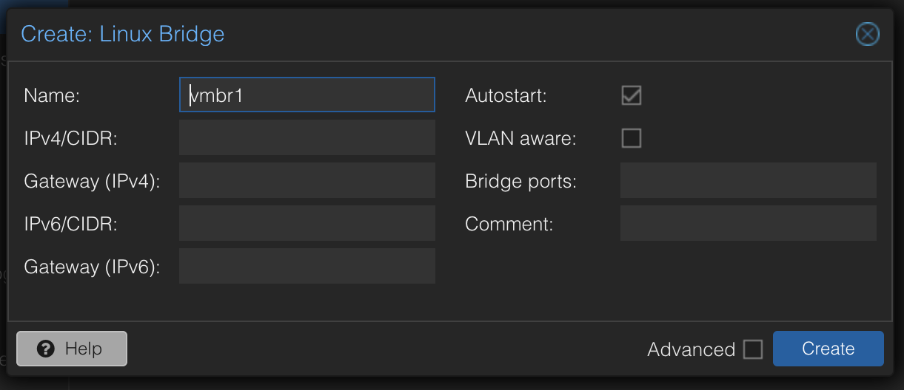
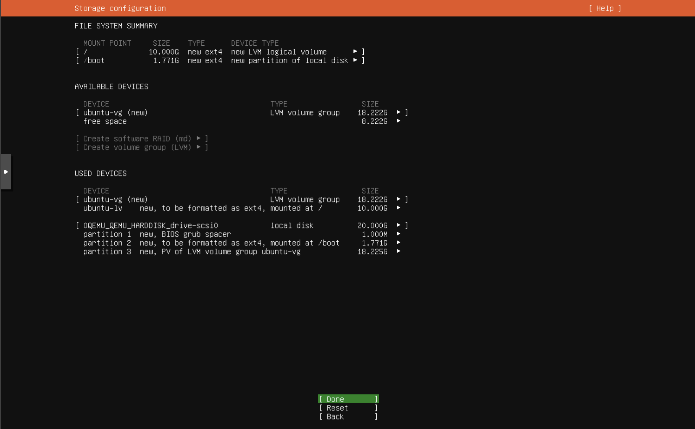
SSH was installed and enabled on the target machine, and connectivity between the attacker and
target was verified through ping and SSH tests. At this stage, the goal was simply to ensure the lab
environment was stable, segmented, and ready for controlled attack simulation.
This setup formed the foundation for all packet capture and log analysis carried out in later parts
of the project.
Part 2: Stealth SYN Scan Analysis
With the lab environment ready, I moved on to analysing how a stealth port scan behaves at the
packet level. I used tcpdump on the Ubuntu server to capture traffic while running a SYN scan from
Kali using
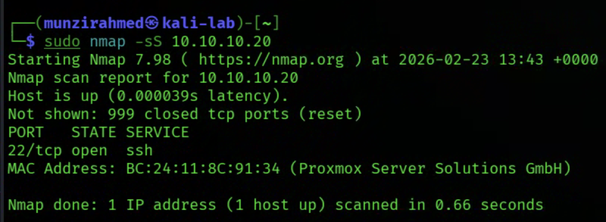
After transferring the capture file to Kali, I opened it in Wireshark and filtered for specific TCP flags. I observed that 1000 SYN packets were sent, only one SYN/ACK response was received for the open SSH port, and the remaining ports responded with RST packets. For the open port, the handshake stopped at SYN, SYN/ACK, RST, meaning the connection was never fully established.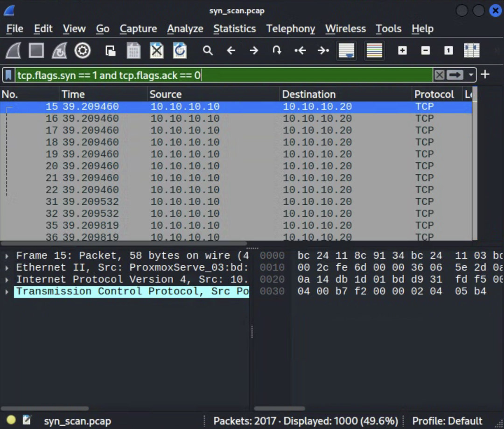
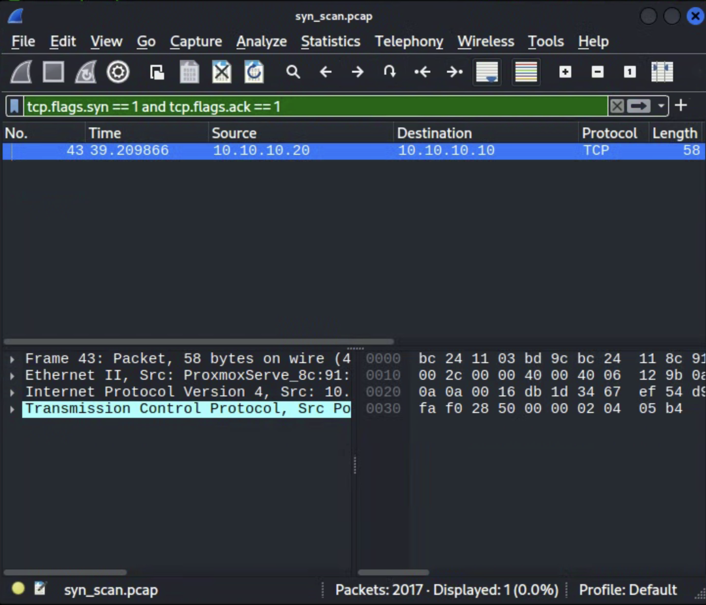
This confirmed how a half open scan works in practice. Instead of completing the three way handshake, the scanner sends a reset after receiving confirmation that the port is open. Seeing this directly in the packet capture made the behaviour much clearer than simply reading about it.
Part 3: Full TCP Connect Scan Comparison
After analysing the stealth SYN scan, I repeated the process using a full TCP connect scan with
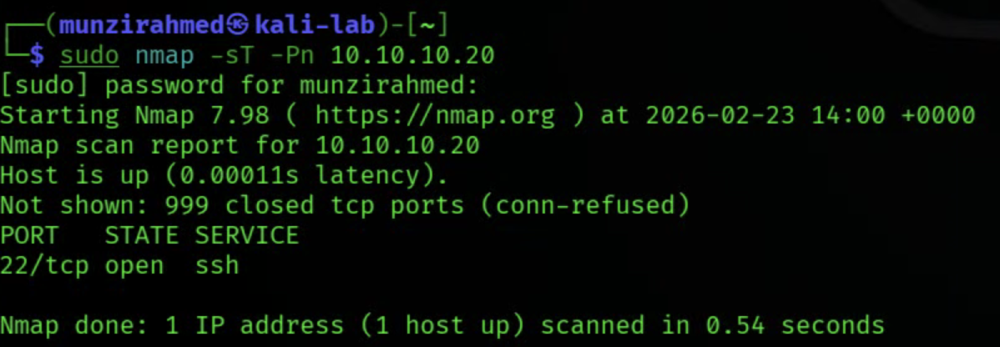
This time, the open SSH port completed the full three way handshake. Instead of stopping at SYN, SYN/ACK, RST, I observed SYN, SYN/ACK, ACK followed by additional connection packets before the session closed. The number of ACK packets increased significantly compared to the stealth scan, showing that a real connection was briefly established.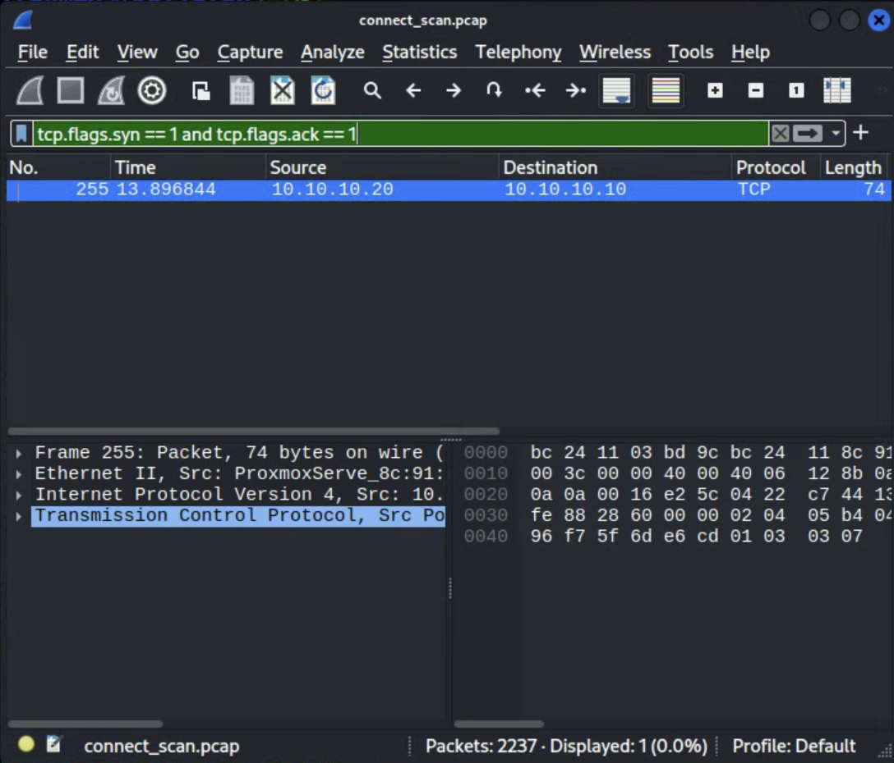
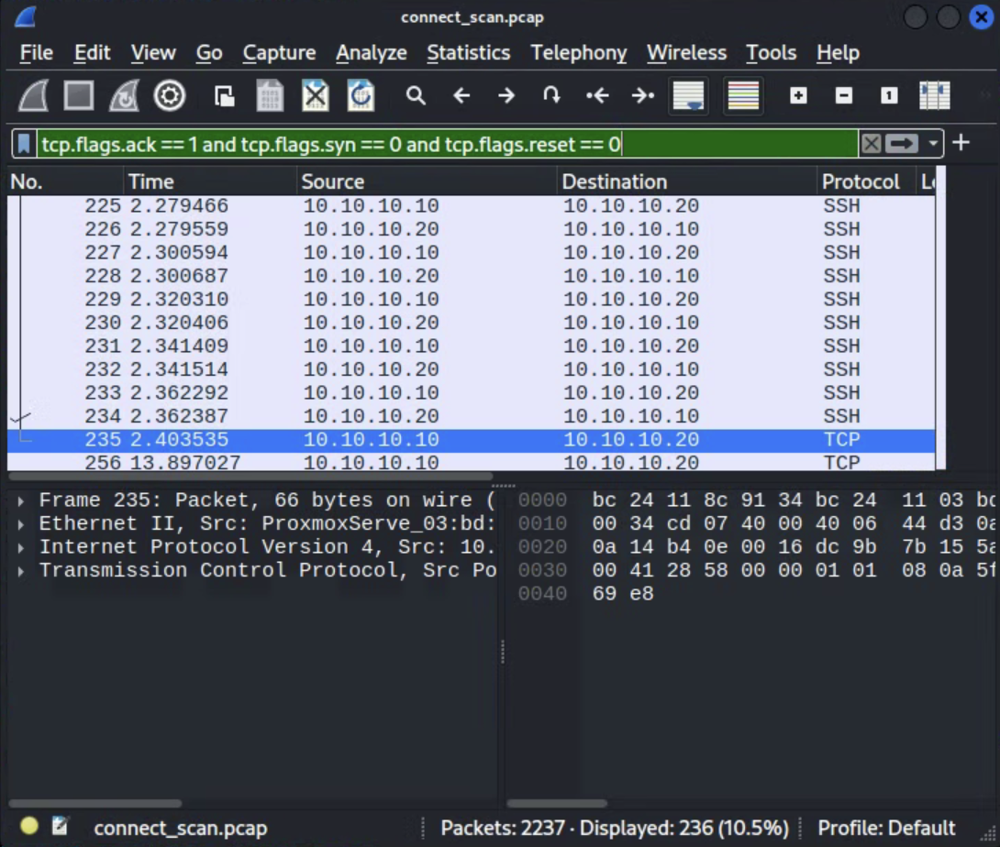
This comparison helped highlight the difference in detectability. A full connect scan generates more normal looking traffic and is more likely to appear in host logs, while a SYN scan avoids completing the connection and leaves a smaller footprint.
Part 4: Firewall Behaviour and Filtered Ports
Next, I enabled a firewall on the Ubuntu server using UFW and configured it to deny all incoming
connections except SSH. The purpose was to observe how defensive controls change the way a port scan
appears at the network level.
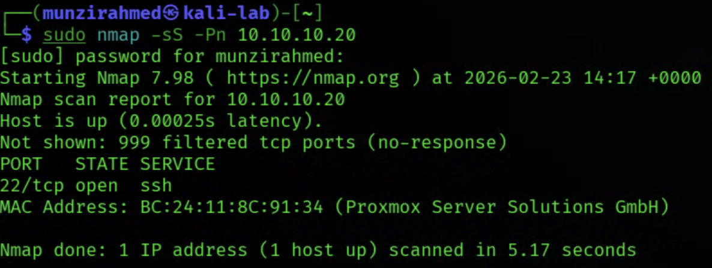
After running another SYN scan and capturing the traffic, the results were noticeably different. Instead of returning RST packets for closed ports, the firewall silently dropped the traffic. Nmap reported 999 ports as filtered, and I observed a large increase in SYN retransmissions. The scan also took significantly longer to complete.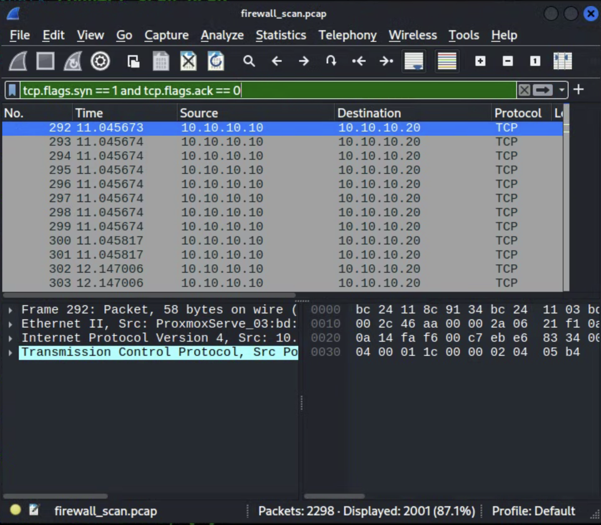
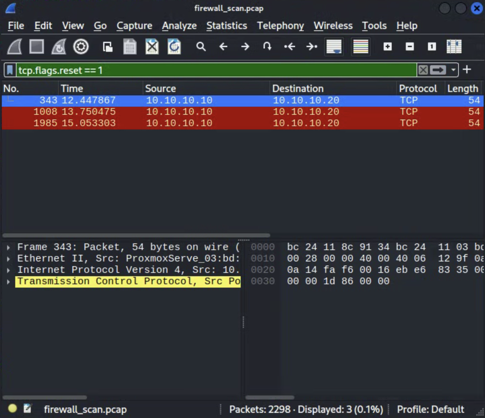
This demonstrated the difference between closed and filtered ports in practice. A closed port actively responds, while a filtered port provides no response at all. Seeing this change in behaviour reinforced how firewalls alter scan signatures and how that affects detection and analysis.
Part 5: SSH Brute Force Log Investigation
In the final part of the project, I shifted focus from network traffic to host level logs. I
simulated repeated failed SSH login attempts from the Kali machine and then analysed the
authentication logs on the Ubuntu server.
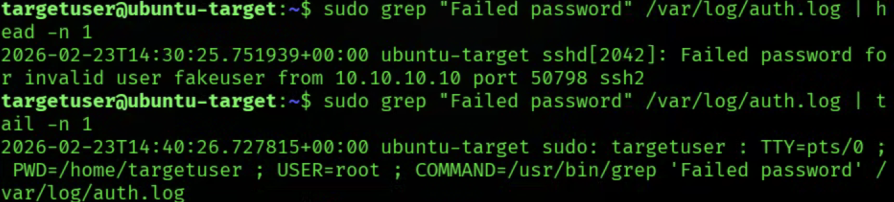
By reviewingThis part of the project demonstrated how brute force behaviour appears in system logs and how to extract meaningful indicators such as source IP, attempt count, and time range. It reinforced the importance of log analysis in detecting and investigating suspicious authentication activity.
This project allowed me to follow the full flow of an attack from generation to detection and investigation. I analysed reconnaissance at the packet level, observed how firewall rules change scan behaviour, and then investigated failed authentication attempts through system logs. By the end of it, I had a much clearer understanding of how network activity translates into real signals that a defender can monitor and respond to.